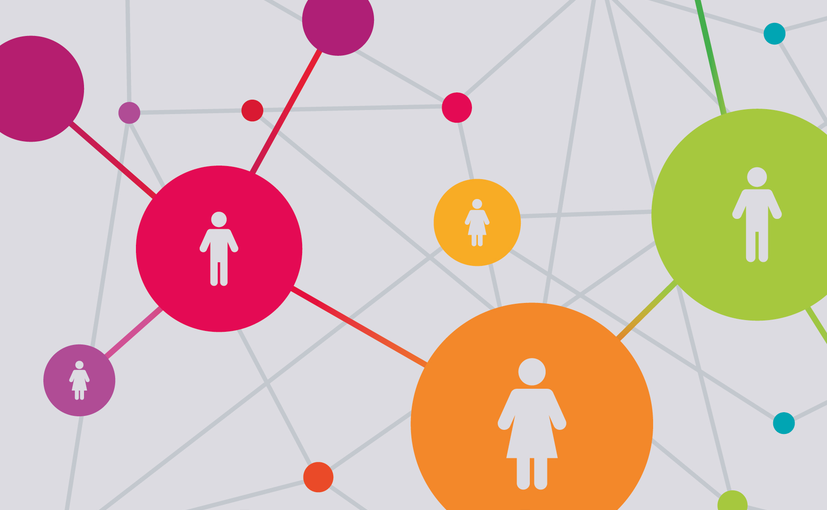

Understanding the Impact: AI algorithms trained on biased datasets may perpetuate discrimination against individuals with ethnically diverse names or backgrounds.
Potential Consequences: Biased AI systems may result in unfair treatment in hiring processes, loan approvals, and other decision-making scenarios.
Data & Insights:
Bertrand, Marianne, and Sendhil Mullainathan conducted a landmark field experiment titled "Are Emily and Greg More Employable Than Lakisha and Jamal?" The study, published in a National Bureau of Economic Research (NBER) working paper, revealed that resumes with traditionally African-American names received 50% fewer callbacks in job applications compared to identical resumes with traditionally white names (Bertrand and Mullainathan, 2003).
Case study:
In a study conducted by researchers at Stanford University, resumes with traditionally African-American names were found to be 33% less likely to receive callbacks compared to identical resumes with traditionally white names. This bias in hiring practices, perpetuated by AI screening tools, underscores the need for algorithmic fairness and awareness of ethnic biases in AI systems.
